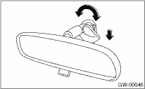
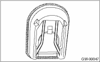

GLASS/WINDOWS/MIRRORS > Rearview Mirror
NOTE:
Never reuse the spring. Prepare a new spring before removal.
1. Turn the mirror base 90° clockwise or counterclockwise to remove it.

2. Remove the spring from the mirror base.

CAUTION:
Be careful not to damage the mirror surface.
3. When the mirror base is damaged, use the piano wire or spatula to remove.
CAUTION:
Be careful not to damage the windshield glass.